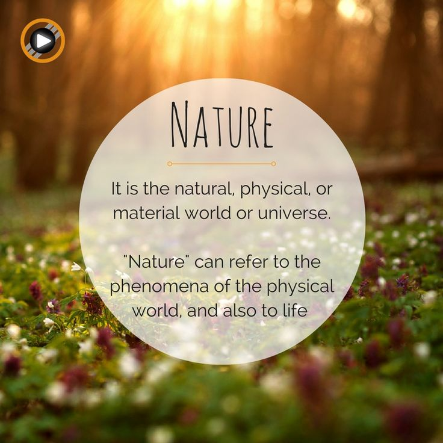
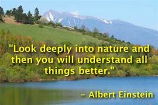

The phenomena of the physical world collectively, including plants, animals, the landscape, and other features and products of the earth, as opposed to humans or human creations. "the breathtaking beauty of nature"
Nature, in the broadest sense, is equivalent to the natural world, physical world, or material world.
"Nature" refers to the phenomena of the physical world, and also to life in general.
It ranges in scale from the subatomic to the cosmic.
The term "nature" may refer to living plants and animals, geological processes, weather, and physics, such as matter and energy.
The term is often refers to the "natural environment" or wilderness—wild animals, rocks, forest, beaches, and in general areas that have not been substantially altered by humans, or which persist despite human intervention.
For, example, manufactured objects and human interaction are generally not considered part of nature, unless qualified as, for example, "human nature" or "the whole of nature".
This more traditional concept of "nature" implies a distinction between natural and artificial elements of the Earth, with the artificial as that which has been brought into being by a human consciousness or a human mind.
The word nature is derived from the Latin word natura, or "essential qualities, innate disposition", and literally means "birth".
Natura was a Latin translation of the Greek word physis (φύσις), which correlated plants, animals, and other features of the world as developing of their own accord.
The concept of nature as a whole, the physical universe, is one of several expansions of the original notion; it began with certain core applications of the word by pre-Socratic philosophers, and has steadily gained currency ever since.
The atmosphere of the Earth serves as a key factor in sustaining the planetary ecosystem.
The thin layer of gases that envelops the Earth is held in place by the planet's gravity.
Dry air consists of 78% nitrogen, 21% oxygen, 1% argon and other inert gases, carbon dioxide, etc.; but air also contains a variable amount of water vapor. The
atmospheric pressure declines steadily with altitude, and has a scale height of about 8 kilometres at the Earth's surface: the height at which the atmospheric pressure has declined by a factor of e .
The ozone layer of the Earth's atmosphere plays an important role in depleting the amount of ultraviolet (UV) radiation that reaches the surface.
As DNA is readily damaged by UV light, this serves to protect life at the surface.
The atmosphere also retains heat during the night, thereby reducing the daily temperature extremes.